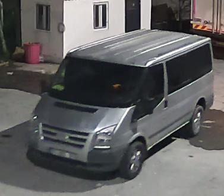
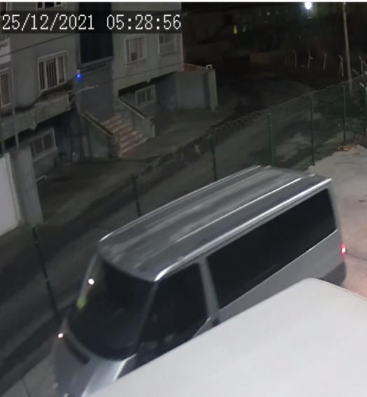
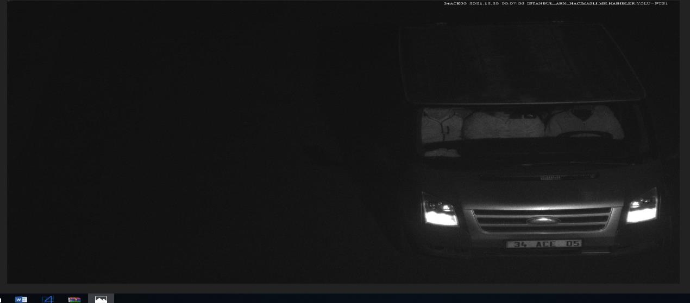
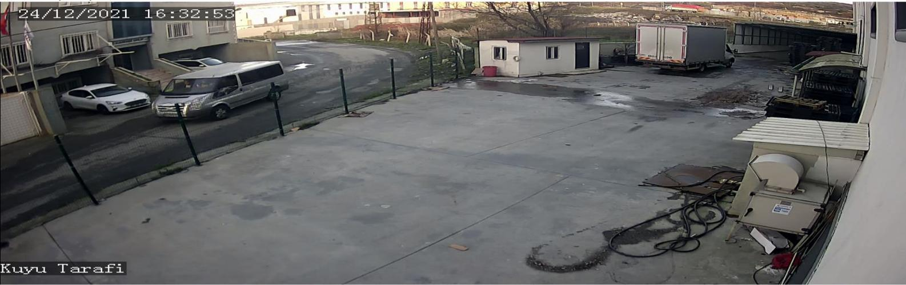
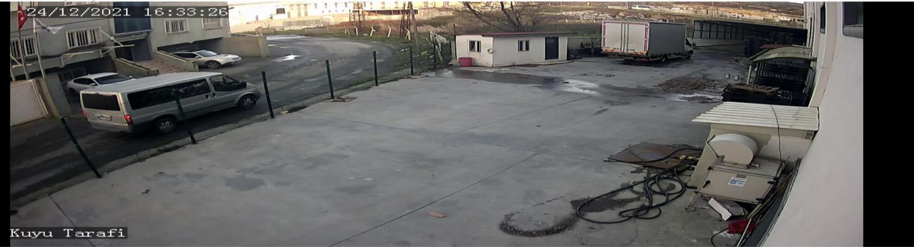
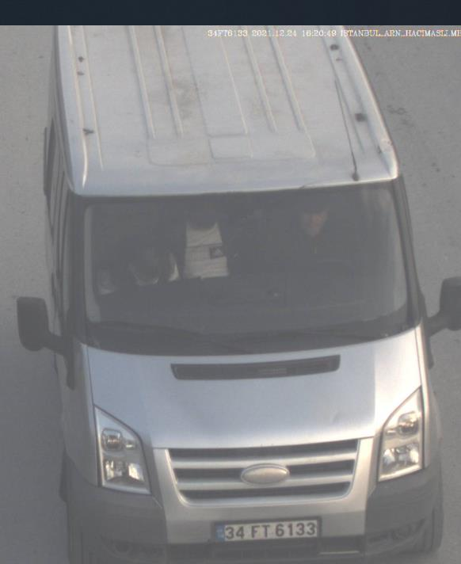
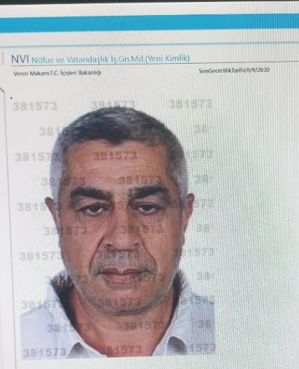
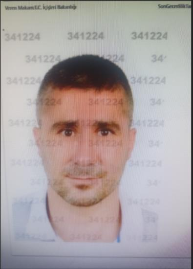

GÖRÜNTÜ ÇÖZÜMLEME, ARAŞTIRMA VE TESPİT TUTANAĞI
25/12/2021
günü
idaremiz
Bolluca
Mahallesi
Erciyes
Sokak
No:19
Arnavutköy/İSTANBUL sayılı adreste faaliyet gösteren Kaya Medical isimli iş yerinden gerçekleşen ve Yavuz Selim Polis Merkezi Amirliğince 2021/5532 Suç numaralı İş yerinden ve kurumdan hırsızlık olayıyla ilgili olarak ;
Arnavutköy Asayiş Büro Amirliğine bağlı 81 567 kod numaralı ekip olarak yaptığımız çalışmalarda olayın meydana geldiği Kaya Medical isimli iş yerinden usulüne göre temin edilen görüntülerde Kuyu Tarafi ibareli görüntüde kamera saatinin güncel saatte uyumlu olduğu anlaşılarak izlenildiğinde kamera saatine göre 25-12-2021 05:17:37 de kapalı kasa Ford Transit marka aracın kamera açısına girdiği, iş yerine uzak bir yerde park ettiği, saat 05:18:10 da bu araçtan iki şahsın yürüyerek iş yerinin etrafında gezindiği saat 05:19:20 de bu iki erkek şahsın iş yeri önüne gelerek iş yerine doğru bakındığı 1. Şüpheli şahsın üzerinde mavi renk mont, mavi renk pantolon, ellerinde sarı-beyaz renkte inşaat eldivenleri, kafasında siyah bere ve yüzünde maske olduğu, 2. Şüpheli şahsın üzerinde siyah renk mont ve pantolon, başında mavi kapşonlu giyişi , elinde sarı- beyaz renkte inşaat eldiveni yüzünde maske olduğu görülmüş, 2. Şüpheli şahsın yanında bir köpek olduğu, şahsın köpekle oynadığı, saat 05:21:10 da 1. Ve 2. Şüpheli şahsın geldikleri araca doğru gittikleri, saat 05:21:48 te 1. Ve 2. Şüphelinin tekrar iş yeri önüne geldikleri, 2. Şüphelinin iş yeri dışarısını çevreleyen telleri kontrol ettiği, saat 05:23:00 te 1. Ve 2. Şüphelinin tekrar geldikleri araca doğru yöneldikleri, saat 05:25:00 ta 1. Ve 2. Şüphelinin yaya iş yerine doğru yürükleri bu sırada şüphelilerin geldikleri aracın iş yerine yakın bir yere kadar ilerlediği ve park haline geldiği, saat 05:27:10 da 1. Ve 2. Şüphelin iş yeri içerisine girdikleri,
(Şüpheli araç) (2. Şüpheli)
(1. Şüpheli)
1


Saat 05:28:00 de aracın iş yerine doğru hareket ettiği bu sırada 1. Ve 2. Şüpheli şahsın iş yeri içerisinden araca doğru geldikleri, 1. Şüpheli şahsın elinde demir makas bulunduğu, saat 05:28:54 te şüpheli aracın geri geriye iş yeri içerisine girdiği, 1. Ve 2.şüphelinin iş yeri içerisi arka kısmına doğru gittikleri, aracın da bu iki şüphelinin olduğu kısma doğru hareket ettiği görülmüştür.
(ŞÜPHELİ ARACIN İŞ YERİ İÇERİSİNDEKİ GÖRÜNTÜSÜ)
Şüpheli aracın inlemesinde ; aracın sol üst kısmında ve tavan kısmında ezilmeler olduğu, ön kaput kısmında ufak göçük olduğu, ford ibaresinin eskimiş olduğu, sağ ön farın alt kısmında yuvarlak şekilde boşluk olduğu ayrıca tavan kısmında sağ ve sollu çıtaların çıkartılmış olduğu çıtanın sabitlendiği yerlerde çıta izlerinin halen durduğu ve tavanın eskimiş halde olduğu tespit edilmiştir.
2

(3.şüpheli şahıs)
( 1. , 2. Ve 3. Şüphelinin iş yeri içerisinden elektrik kablolarını yuvarlayarak çıkardıkları ve şüpheli aracın da bu şüphelileri iş yeri dışarısında bekledikleri görülmüştür.) 3. şüpheli şahsın üzerinde siyah renk mont, gri renk kapşonlu giyişi, ellerinde sarı-beyaz renk inşaat eldiveni olduğu görülmüştür.
Saat 05:29:19 da şüpheli aracın bagaj arka kapağının açıldığı, şüpheli şahısların aracın arka kısmından araca bir şeyler yükledikleri, saat 05:33:12 de şüpheli aracın iş yeri dışarısına doğru hareket ettiği, aracın iş yeri dışarısına çıktığı, 1. , 2. Ve 3. Şüphelinin iş yeri içerisinde yuvarlak ahşap üzerine sarılı kırmızı renkli elektrik kablolarını alarak yuvarlamak suretiyle iş
yerinden çıkardıkları ve dışarıda bekleyen şüpheli araca yükledikleri görülmüştür.
Olayla ilgili yaptığımız çalışmalarda olay günü olaydan önce ki Arnavutköy Habipler –
Boğazköy Mevkii PTS(Plaka Tanıma Sistemi) kontrol edildiğinde hırsızlıkta kullanılan Ford Transit Marka araçla bire bir aynı araç olan üzerlerinde 34 ACM 05 plakalı Ford Transit marka aracın olaydan hemen önce 25/12/2021 günü saat 05:07:36 da PTS’ye takıldıkları, araç içerisinde üç şahsın olduğu ve yüzlerini maske ile kapattıkları görülmüştür.
(34 ACE 05 PLAKALI ARACIN 25/12/2021 05:07:36 DA Kİ PTS GÖRÜNTÜSÜDÜR) 3
34
ACM
05
plakalı
araç
hakkında
yaptığımız
çalışmada
Tahsin
OĞUZ(T.C.36802248968) isimli şahsın Küçükçekmece ilçesi Halkalı Şehit Ahmet Zahir Polis Merkezi Amirliğinde 25/12/2021 günü müşteki sıfatıyla 2021/4367 ceraim numaralı Açıktan Hırsızlık dosyasında ifade verdiği ifadesinde özetle ; “ 25/12/2021 günü 34 ACE 05 plakalı aracın ön ve arka plakalarının çalındığını “ beyan etmiş, idaremiz Bolluca Mahallesi Erciyes Sokak No:19 Arnavutköy/İSTANBUL sayılı adreste faaliyet gösteren Kaya Medical isimli iş
yerinden gerçekleşen iş yerinden hırsızlık olayında şüphelilerin 34 ACE 05 plakalı aracın çalıntı plakalarını kullandıkları anlaşılmıştır.
İlimiz genelinde benzer hırsızlık olaylarına karışan benzer marka ve modelde ki araçlar kontrol edildiğinde 34 FT 6133 plaka sayılı Ford Transit marka aracın PTS kontrolünde olaydan bir gün önce 24/12/2021 günü saat 16:20 de Arnavutköy Habipler – Boğazköy Mevkii PTS’den geçiş yaparak idaremize giriş yaptığı anlaşılarak aracın yapılan fotoğraf detayında şüpheli şahısların kullanmış olduğu çalıntı plakalı 34 ACE 05 plakalı araçla bire bir ayırt edilebilen özelliklere sahip olduğu (aracın sol üst kısmında ve tavan kısmında ezilmeler olduğu, ön kaput kısmında ufak göçük olduğu, ford ibaresinin eskimiş olduğu, sağ ön farın alt kısmında yuvarlak şekilde boşluk olduğu ayrıca tavan kısmında sağ ve sollu çıtaların çıkartılmış olduğu çıtanın sabitlendiği yerlerde çıta izlerinin halen durduğu ve tavanın eskimiş halde olduğu ) anlaşılmıştır.
(34 FT 6133 Plakalı aracın 24/12/2021 günü saat 16:20 de Arnavutköy Habipler –
Boğazköy Mevkii PTS’den geçtiği görüntüdür.)
Yapılan çalışmaların devamında 34 FT 6133 plakalı aracı kullanan şahısların hırsızlık olayının meydana geldiği adres olan Bolluca Mahallesi Erciyes Sokak No:19
Arnavutköy/İSTANBUL sayılı adrese veya civarına keşif amaçlı önceden gelebileceği değerlendirilerek bahse konu hırsızlık olayının meydana geldiği Kaya Medical isimli iş
yerinden 24/12/2021 günü saat 16:20 sonrasına ait kamera kayıtları incelendiğinde 34 FT 6133
Plakalı aracın 24/12/2021 saat 16:32:06 da Kaya Medical isimli iş yeri önüne geldiği, saat 4


16:32:53 te Kaya Medical önüne doğru tekrar geri döndüğü, saat 16:33:26 da tekrar Kaya Medical önünden geçtikleri görülmüştür.
(34 FT 6133 plakalı aracın Kaya Medical araçla geldiği görüntüdür.)
5




Yaptığımız çalışmalar neticesinde ; 25/12/2021 günü idaremiz Bolluca Mahallesi Erciyes Sokak No:19 Arnavutköy/İSTANBUL sayılı adreste faaliyet gösteren Kaya Medical isimli iş yerinden gerçekleşen hırsızlık olayında şüpheli şahısların olaydan bir gün önce yani 24/12/2021 günü saat 16:33 te 34 FT 6133 plakalı Ford Transit marka araçla keşif amaçlı iş
yeri önüne geldikleri, iş yeri çevresinde üç tur attıkları, 25/12/2021 günü Küçükçekmece idaresinden çalınan 34 ACE 05 aracın plakalarını geldikleri 34 FT 6133 plakalı araç üzerine takarak çalıntı plakalı takılı AYNI araçla hırsızlığı gerçekleştirdikleri anlaşılmıştır.
(ARNAVUTKÖY PTS GÖRÜNTÜSÜ) (BAŞAKŞEHİR PTS GÖRÜNTÜSÜ) (Başakşehir pts’den şüpheli şahısların orijinal 34 FT 6133 plakalı araçla 25/12/2021 günü saat 04:05:06’dan geçtikleri, aynı şüphelilerin aynı araçla üzerinde 34 ACE 05 plakalı çalıntı plaka takılı vaziyette 05:07:06 da Arnavutköy Pts’den geçtikleri, şüphelilerin üzerlerinde ki kıyafetlerden ve aracın bire bir aynı özelliklerinden anlaşılmıştır.)
(Metin ESETEKİN’in araç içerisi ve polnet’e kayıtlı fotoğrafı) 6


(Emrah BOZKURT’un araç içerisi ve polnet’e kayıtlı fotoğrafı) POLNET sistemi üzerinden yapılan sorgulamalarda 34 FT 6133 plaka sayılı aracın 69508069902 T.C. kimlik numaralı Harun KALYON isimli şahıs adına kayıtlı olduğu, Harun KALYON isimli şahsın yapılan sorgulamasında ise 6 adet Hırsızlık suçundan emniyette kaydının olduğu, yine Harun KALYON’un adres sorgulamasında ise mernise kayıtlı bir adresinin bulunmadığı tespit edilmiştir.
Yaptığımız çalışmalarda şüphelilerin kullanımda ki 34 FT 6133 Plakalı aracın 24/12/2021 günü şoförüyle aynı aracın geçmiş tarihlerde ki pts görüntüleri kontrol edildiğinde aracı buna benzer birçok suça karışmış olan 13172745358 T.C. kimlik numaralı Metin ESETEKİN isimli şahıs olduğu tespit edilmiştir.
Yine yaptığımız çalışmalarda şüphelilerin kullanımda ki 34 FT 6133 Plakalı aracın 24/12/2021 günü, hırsızlığın olduğu tarihte ki pts görüntüleri kontrol edildiğinde araçta en sağda oturan şahsın bu olaya benzer birçok suça karışmış olan 16675234442 T.C. kimlik numaralı Emrah BOZKURT isimli şahıs olduğu tespit edilmiş, şüpheli şahısların teminine ve tespitine yönelik çalışmalarımız devam etmekte olup;
İş bu tutanak tarafımızdan tanzimle altı birlikte imza altına alınmıştır. 08/01/2021 22.00
341224
345215
P.M.
P.M.
7